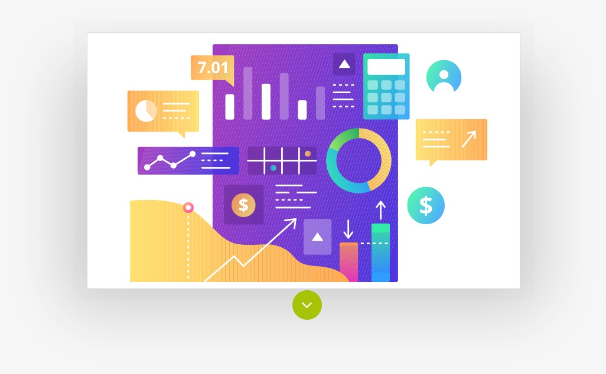
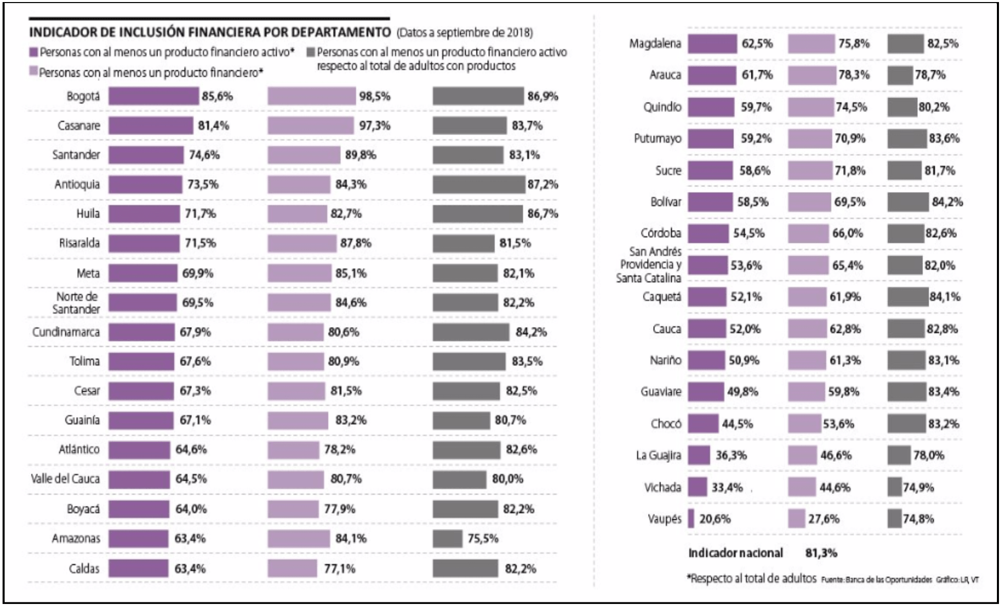

Métodos de pago
require(knitr)
include_graphics("img/portada.jpeg")
Las dinámicas transaccionales de los colombianos reflejan sus hábitos, intereses y motivaciones para hacer uso de sus productos financieros y nos permiten comprender mejor qué podemos ofrecerles en términos de productos y servicios. Aquí algunos hallazgos clave:
- Representando el 91.4% del monto de las transacciones ($), los principales métodos de pago en valor de transacción para el 2019 son: PSE (50.8%), Visa (24.3%) y Mastercard (16.1%).
- Las motivaciones en el uso de los métodos de pago son: en PSE obedece a pagos de obligaciones bancarias y en período de pagos de impuestos. Para el caso de tarjetas de crédito, el comportamiento obedece a intenciones de consumo principalmente.
- Efecty es el principal método de pago en departamentos con baja inclusión financiera como Putumayo (33.6%) y Caquetá (41.9%), siendo este último el que mayor porcentaje de cambio tuvo (+121%) comparando el monto total aportado entre 2018 y 2019.
Contenido
- Overview
- Débito a cuenta
- Tarjetas de crédito
- Efectivo
- Agrupado de datos
Overview
Valores
Proporción
El impacto de un método de pago depende de las características demográficas y geográficas de los clientes. Algunos métodos de pago están disponibles en casi todos los países, como las tarjetas de crédito, y, en otros casos como Colombia, la penetración de este medio de pago es relativamente baja: 28%, mientras que en México es de 38% y en Brasil es 57%; según el estudio realizado en el 2019 por IDC titulado “Cómo las FinTech y los bancos pueden democratizar los servicios financieros en América Latina”. Fuente. Identificar esos clientes potenciales es el primer paso para decidir qué opciones de productos y servicios financieros podemos ofrecer que se adapten mejor a sus necesidades.
Otra consideración a tener en cuenta en esta lectura del mercado, es el modelo de negocio, los pagos en efectivo no son la mejor opción para aquellos comercios que realizan ventas instantáneas por celulares o para quienes el valor de sus ventas promedio es bajo, sin embargo, se adaptan muy bien a comercios que ven oportunidades en ciudades pequeñas y medianas. De otro lado, las tarjetas de crédito pueden ser aliados en comercios que vendan empresa a empresa o aquellas que tengan un ticket promedio elevado (electrodomésticos).
Por último, las preferencias de los clientes pueden tener causas más profundas, que también deben tenerse en cuenta. En mercados como el colombiano aunque el comercio electrónico ha crecido rápidamente en los últimos años, aún existe desconfianza por parte de los consumidores al usar tarjetas de crédito por el temor a ser víctimas de fraude.
Débito a cuenta
La categoría débito a cuenta agrupa los métodos de pago PSE y tarjetas débito de nueva generación. Esta categoría es la que más aporta al total de transacciones procesadas durante el 2019 con un porcentaje del 51.4% del TPV, participación que incrementó un 21% frente al 2018.
PSE es el método de pago que aporta a casi la totalidad (98.9%) de la categoría Débito a Cuenta, seguido por Visa Debit con un porcentaje de aporte de 0.6%.
PSE
PSE aumentó en TPV un 20% entre 2018 y 2019, pero frente a el total del año por método de pago, PSE representó el 53% del tpv ($) en 2018 y 50.8% en 2019 lo que significa que tuvo una menor proporción de mercado al reducirse en porcentaje del 53% al 50.8%.
Recuadro 1
¿Cómo funciona PSE?
“Este servicio permite a las empresas ofrecer a sus clientes la posibilidad de realizar pagos y/o compras, debitando los recursos en línea de la Entidad Financiera donde el cliente tiene su dinero y depositandolos en la Entidad Financiera recaudadora que defina la Empresa o Comercio. Tiene acceso a 18 millones de cuentas corrientes/ahorros en 17 entidades financieras.” Fuente.
Lo cierto es que PSE es el método preferido por los colombianos para pagar sus obligaciones: las principales industrias en la que se utilizan son servicios financieros, tecnología/telecomunicaciones, pago de servicios públicos e impuestos. En total, este método de pago creció a nivel nacional un 40% en el 2018.
Recuadro 2
Según cifras de ACH Colombia, las empresas que más registraron transacciones electrónicas en 2018 a través de PSE, fueron:
- PayU Latam
- Movistar
- TigoUne
- DIAN
- Banco AV Villas
En términos generales ¿Cómo se comporta PSE?
Durante el año, PSE sigue un comportamiento estacional, con picos en julio y diciembre y valles en febrero y septiembre. En Colombia los picos se pueden explicar en parte por las festividades celebradas en junio (tiene la mayor cantidad de feriados o festivos del año) y diciembre (fiestas religiosas y de fin de año) y en parte por las bonificaciones que entregan las empresas a sus empleados a razón de la “prima”: una bonificación que consiste en pagar al empleado una mitad adicional del sueldo en junio y otra mitad adicional del sueldo en diciembre.
La industria de servicios públicos e impuestos muestra un pico significativo en marzo de 2019. Durante este mes, 81% de las transacciones se hicieron mediante PSE, lo que puede tener alguna correlación con las fechas de vencimiento de la tarifa plena o con el descuento realizado a los impuestos de tipo predial y vehicular en las diferentes ciudades del país. Fuente.
VISA Débito
Comparando el aporte al TPV del 2019 de cada método de pago, el 0.6% corresponde a pagos por Visa Débito y se destaca porque tuvo un crecimiento de 3.5 veces su valor en 2019 con relación a 2018; el mayor registrado en todos los métodos de pagos.
Esta línea de Visa permite utilizar la tarjeta débito para compras en internet de cualquier monto a nivel nacional e internacional, gracias al código CVV (Card Verification Value) propio de las tarjetas de crédito. Bbva, Banco Falabella y Banco de Bogotá fueron de los primeros bancos en implementar esta tecnología en Colombia y la tendencia se proyecta a extenderse en otras franquicias como Mastercard y Amex en el 2020 y 2021. Fuente.
¿Cómo se comporta Visa Débito?
Las industrias en las que más se utiliza este método de pago Tecnología y Entretenimiento. La primera ha incrementado la suma procesada (usando este método de pago) en un 387% y la segunda en un 193%, ambas con respecto al 2018. Estas industrias aportan al TPV total del 2019 un 10.8% y 10.6% respectivamente; lo cual las ubica en el puesto 4 y 5 de las industrias con mayor TPV.
Tarjetas de crédito
Esta categoría fue la segunda que más aportó al TPV de 2019 con un 44%; aumentando un 29% en volumen ($) en comparación con 2018.
El principal método de pago en esta categoría es Visa, cuyo porcentaje de aporte al TPV es de 55%; seguido por MasterCard con 36%, AMEX con 5%, Diners con 1%, CMR con 0.5% y Codensa con 0.2%.
Este último, fue el método de pago en la categoría Tarjetas de Crédito que más creció en el 2019 en términos de cantidad de transacciones procesadas (TPT): 91% más que en el año 2018. Esto como resultado de las 91.382 transacciones procesadas en 2019. La industria que más estimuló el crecimiento de Codensa fue la de Tecnología, a la que puede atribuírsele un 35.8% de las transacciones durante ese año.
¿En qué utilizan los colombianos sus tarjetas de crédito?
A diferencia de la motivación de los pagos por débito a cuenta, más de la mitad del número total de transacciones en 2019 tuvieron como finalidad el consumo de productos o servicios asociados al ocio o entretenimiento. A estos le siguieron las industrias de transporte, tecnología y ventas en general.
¿Cuando se utilizan las tarjetas de crédito en Colombia?
El mes pico en cada año es noviembre y está significativamente marcado por el evento insignia del ecommerce: el Black Friday. Otros meses como mayo (mes de la madre) y junio (vacaciones de mitad de año) conservan un volumen de transacciones estable.
Resulta llamativo que durante el periodo de semana santa (abril) las transacciones tienden a descender. El segundo semestre de cada año se muestra cómo el mejor semestre para las compras y puede ser la temporada propicia para abrir negocios en Colombia.
El cambio más significativo en el TPV por industria entre 2018 y 2019 para la categoría Tarjetas de Crédito lo tienen arquitectura, construcción e ingeniería (+86%), agricultura y servicios industriales (+75%) y maquinaria, equipos y mobiliario (+74%). En todas las industrias, para esta categoría, el método de pago predominante es Visa.
La tarjeta de crédito que más aportó al monto total de transacción durante el 2019 fue Visa con un 28.7%, esto como consecuencia de que en Colombia hasta el año 2018 junto con Mastercard sean las tarjetas que más se expiden. A pesar de que en 2018 Mastercard dominó el número de tarjeta-habientes en Colombia, Visa se proyecta como líder en el mercado de las transacciones. Fuente.

Lo anterior también se explica considerando que la tarjeta de crédito Visa es el principal método de pago en 23 de los 33 departamentos del país. De otra parte, durante 2019 la tarjeta de crédito Mastercard ha liderado como método de pago en departamentos como Quindío (39.3%), Magdalena (38.7%), Sucre (38.6%), Tolima (37.1%), Córdoba (36.6%), Norte De Santander (34.2%), Vaupés (33.5%), Mastercard (29.7%). Ver mapa en sección “Departamentos”.
Efectivo
Esta categoría agrupa los métodos de pago Efecty, Baloto, y Otros (Su Red) y fue la tercera en generar aportes al monto procesado durante el 2019, con un porcentaje del 3.8% del TPV, participación que registró un aumentó de 70.8% comparado con el 2018.
Efecty
Se trata de una plataforma de giros, pagos y recaudos con más de 8.000 puntos de atención en más de 1.070 municipios a nivel nacional. Fuente. Es el método de pago con mayor porcentaje dentro de los mecanismos de efectivo, pues representa un 75,6% del TPV aportado por esta categoría en el 2019 y representa el 2.8% del TPV aportado por todos los métodos de pago. Su uso ha venido incrementando mes a mes superando sus máximos índices desde julio de 2019.
Con respecto al año 2018, el monto procesado por pagos mediante Efecty ha aumentado en un 91%, principalmente en la industria de las ventas en general, que pasó de aportar un 21.1% (2018) a un 35.7% (2019) en el TPV procesado por cada industria con Efecty.
Others cash hace referencia principalmente a “Su Red” y tiene una representación diminuta en el TPV del 2019.
Adicionalmente, Efecty es el principal método de pago en departamentos como Putumayo (33.58%) y Caquetá (41.9%), siendo este último el que mayor porcentaje de cambio tuvo (121%) comparando el monto total aportado entre 2018 y 2019, esto está relacionado con que en promedio las transacciones hechas en este departamento son de 344K COP (el segundo departamento con el promedio de transacción más alto durante el 2019).
Pie de gráfico La curva de crecimiento de Efecty a lo largo del tiempo muestra una relación entre las curvas de crecimiento de Caquetá y Putumayo en cuanto al TPV
Putumayo y Caquetá cuentan con un porcentaje de inclusión financiera del 59% y 52%, respectivamente; lo que los ubica dentro de los departamentos con más baja inclusión financiera del país. Esto coincide con el alto porcentaje de transacciones que se hacen a través de Efecty.
Fuente: Cifras del programa nacional Banca de las oportunidades (2019)

Baloto
Se trata del segundo método más importante dentro de la categoría efectivo. Baloto es una plataforma que funciona como un método de venta, pago y recaudo; además de ser multicorresponsal bancario y de contar con más de 13,500 terminales ubicadas en más de 1,100 municipios del país, alcanzando a cerca del 96% de la población colombiana. Representa dentro de la categoría el 18% del TPV aportado en el 2019, un 21% más que el monto procesado en el 2018.
Dicha posición se evidencia gracias a las principales industrias en las que se utilizó para realizar pagos durante el año 2019, que fueron:
- Vestuario: la industria en la que más se realizan pagos por Baloto, aportando el 25% del monto recaudado (TPV) por este método de pago en el 2019; esto equivale a un 44% más que el procesado en el 2018.
- Ventas en general: es la segunda industria en la que más se realizan pagos a través de este medio y asimismo es la segunda que más aporta al TPV de este método de pago con un 18%, lo cual equivale a un 14% más que la suma acumulada en el 2018.
- Tecnología/telecomunicaciones: en esta industria se llevaron a cabo 89.675 pagos en 2019, que generaron un 12,95% del TPV de este medio de pago. Dicho monto significó un crecimiento de 40,86% con respecto a lo procesado en el 2018.
Agrupado de datos
Copyright © 2020 PayU & Fidelio, todos los derechos reservados.